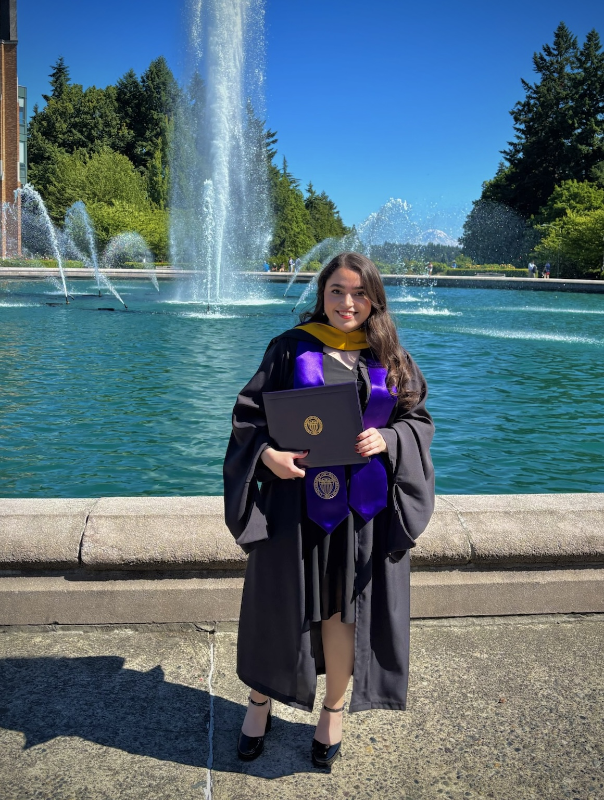

Valeria Garcia
Atmospheric Scientist · Ph.D. Candidate
Cloud Microphysics · Remote Sensing · Winter Storms
Hello! Welcome to my page, where I geek out about airborne observations of snow and some of the other things I’ve been working on throughout graduate school.


About Me
I am a Ph.D. candidate in the Department of Atmospheric and Climate Science at the University of Washington, where I also earned my M.S. in Atmospheric Sciences. My research, advised by Lynn A. McMurdie (UW) and Robert M. Rauber (UIUC), has focused on using airborne in situ and remote sensing observations to study the microphysical properties of clouds and precipitation in winter storms. Before coming to UW, I earned my B.S. in Atmospheric Science and Planetary Sciences from Purdue University (Boiler Up!).
I think snowflakes are one of nature’s most beautiful creations, so of course I’ve dedicated my graduate school career to studying them in their natural habitat: inside clouds. Along the way, I’ve had the opportunity to participate in airborne field campaigns and research internships that have broadened my experience in observational atmospheric science.
When I’m not thinking about snow, you can usually find me reading a good science fiction or fantasy book...or wishing I had more time to indulge in other hobbies. 😅